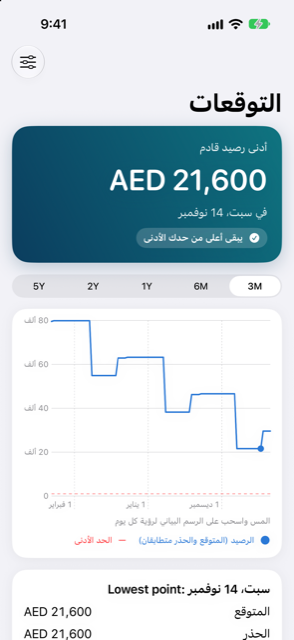

الدليل › التخطيط
التوقعات والمبلغ الآمن للصرف
كيف يحسب Damla المبلغ الآمن للصرف، وكيف تقرأ المخطط.
يعرض «التوقعات» رصيدك للأيام القادمة، يوماً بيوم، بناءً على ما هو مسجَّل بالفعل في دفاترك. أما «المبلغ الآمن للصرف» فهو أكبر مبلغ يمكنك صرفه اليوم دون أن ينزل رصيدك إلى ما دون حدّك الأدنى في أي وقت خلال الفترة القادمة.

متى تستخدمه
- لترى أدنى مستوى يصل إليه رصيدك، ومتى يصل إليه، على مدى النطاق الذي تختاره: 3M أو 6M أو 1Y أو 2Y أو 5Y.
- عندما تقول شاشة «اليوم» إن الرصيد قد يصبح غير كافٍ، لترى اليوم الذي سيحدث فيه ذلك.
- بعد أن تغيّر دخلاً أو فاتورة أو تاريخ استحقاق، لترى كيف تبدو الأسابيع الآن.
خطوة بخطوة
- افتح «التوقعات» من المخطط على البطاقة الفيروزية أعلى «اليوم».
- اختر نطاقاً من المحدِّد أعلى الشاشة؛ يرسم المخطط رصيدك لهذا النطاق، مع حدّك الأدنى كخط أحمر متقطع.
- المس المخطط واسحب إصبعك عليه لتحريك النقطة. يعرض مربع صغير تاريخ اليوم ورصيدك والحركات، وتسردها البطاقة أدناه بوصفها «وارد» و«صادر» مع الإجماليات.
- اقرأ الشريط أعلى الشاشة: هل ينزل الرصيد إلى ما دون حدّك الأدنى ومتى، أو أنه يبقى فوق حدّك الأدنى.
- انقر ماذا لو أعلى اليمين لتجربة تغيير: صرف مبلغ، أو استلام مبلغ، أو تخطي دفعة متكررة أو خطة متكررة، أو إضافة خطة تقسيط. ترى التأثير على المبلغ الآمن للصرف وعلى أدنى نقطة. لا شيء يُحفظ في دفاترك.
كيف يُحتسب الرقم
- الدخل والفواتير من «الخطة، الدخل والفواتير» تُحتسب وفق جداولها؛ أما ما سجلته أو تخطيته فلا يُحتسب مرة أخرى.
- فواتير البطاقات: الكشف الصادر يستخدم مبلغه الحقيقي في تاريخ استحقاقه. الكشف الذي لم يصدر بعد يستخدم شهراً نموذجياً من إنفاق البطاقة - وهو متوسط أشهرها الأخيرة، أو الرقم المحدد في «الإعدادات» ضمن «الإنفاق المتوقع على البطاقة»، أو الرقم الذي تُعطيه في «التفاصيل» الخاصة بالبطاقة. ويصبح مبلغ الكشف الصادر الحقيقي هو المعتمد. يُذكر رقم كل بطاقة في مجموعة «البطاقات» ضمن «ممَّ يتكون هذا التوقع».
- خطط التقسيط، والمدفوعات على مراحل، والفواتير المعلنة في الإشعارات، والسدادات مع الأشخاص تُحتسب في تواريخها.
- الإنفاق اليومي من حساباتك البنكية لا يُقدَّر تقديراً؛ احتياطك هو ما يغطيه.
- ينظر «المبلغ الآمن للصرف» إلى الأمام مدى لا يقل عن إعداد «مدى النظر للأمام»، ويحتسب دخلك القادم داخل تلك الفترة أيضاً، فالدفعة الكبيرة التي تأتي بعد يوم الراتب مباشرةً تُخفض الرقم. وهو أدنى رصيد في تلك الفترة ناقص الحد الأدنى.
مثال محلول
أسرة افتراضية، في 9 نوفمبر. العملة AED، الحد الأدنى للرصيد AED 1,000، ومدى النظر للأمام 30 يوماً على الأقل.
| ما يُحتسب | القيمة |
|---|---|
| الحساب اليومي (بنك) | AED 29,600 اليوم |
| المدخرات | AED 40,000، معلَّمة بأنها غير محسوبة في التوقع |
| الإنترنت، شهرياً في 12 من الشهر | AED 350 صادر |
| الإيجار، شهرياً في 16 من الشهر | AED 8,000 صادر |
| الراتب، شهرياً في 27 من الشهر | AED 25,000 وارد |
تعرض «اليوم»: رصيد اليوم AED 29,600، وأدنى نقطة AED 21,250 يوم الاثنين 16 نوفمبر، والمبلغ الآمن للصرف AED 20,250 - أي أدنى نقطة ناقص الحد الأدنى البالغ AED 1,000. تمتد النافذة من 9 نوفمبر إلى 9 ديسمبر، متجاوزةً الراتب يوم الجمعة 27 نوفمبر، فما يصل بعد يوم الراتب محسوبٌ أيضاً. المدخرات ليست في هذه الأرقام.
الرصيد يوماً بيوم (خط «متوقع»؛ وخط «متحفّظ» متطابق هنا لأن كل بند ثابت):
| التاريخ | الرصيد | السبب |
|---|---|---|
| 9 إلى 11 نوفمبر | AED 29,600 | |
| 12 نوفمبر | AED 29,250 | إنترنت 350 |
| 16 نوفمبر | AED 21,250 | إيجار 8,000 (أدنى نقطة) |
| 27 نوفمبر | AED 46,250 | راتب 25,000 |
حدود الدفع لمرة واحدة (دفعة واحدة، مع الحفاظ على الحد الأدنى):
| تاريخ الدفع | أكثر ما يمكنك دفعه | المبلغ المريح |
|---|---|---|
| 10 نوفمبر أو 13 نوفمبر أو 19 نوفمبر | AED 20,000 | AED 16,000 |
| 29 نوفمبر (بعد الراتب) | AED 36,500 | AED 29,500 |
قبل الراتب، لا تأخذ دفعة تصل إلى مبالغ الصف الأول رصيدك قط إلى ما دون الحد الأدنى البالغ AED 1,000. وبعد يوم الراتب، يكون الحد أكبر.
من الجيد أن تعرف
ذات صلة
هل هناك شيء غير واضح أو ناقص؟ اكتب إلى support@raveniq.ai واذكر الصفحة.